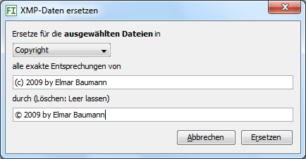

Mit diesem Befehl können Sie in allen ausgewählten Bildern einzelne XMP-Metdaten ersetzen, beispielsweise das falsche Jahr in einem Copyright oder Tippfehler. Zusätzlich wird die Datenbank mit den neuen Daten aktualisiert. Es werden nur genaue Entsprechungen ersetzt.
Lassen Sie das Ersetzen-Eingabefeld leer, wird der Begriff aus allen ausgewählten XMP-Filialdateien gelöscht.
Wollen Sie alle Vorkommen eines Begriffs ersetzen, suchen Sie diesen und es werden alle treffenden Bilder angezeigt. Klicken Sie in die Vorschaubildanzeige und tippen Strg + A zum Auswählen aller Bilder.
